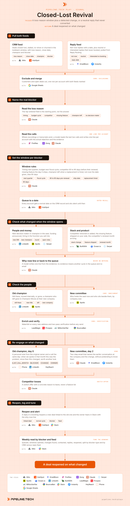

Play 22 · Third-party signals
Closed-Lost Revival
Give this to your agent
Install the Pipeline.tech "Closed-Lost Revival" outbound play. Fetch https://raw.githubusercontent.com/pipeline-tech/plays/main/core/SKILL.md and https://raw.githubusercontent.com/pipeline-tech/plays/main/plays/closed-lost-revival/SKILL.md, save them as ~/.claude/skills/pipeline-outbound-core/SKILL.md and ~/.claude/skills/pipeline-closed-lost-revival/SKILL.md, then run /pipeline-closed-lost-revival.
Paste into Claude Code. It installs the shared core rules plus this play, then runs it as /pipeline-closed-lost-revival.

Workflow, generated from the skillOpen full size
These accounts already know you, they sat through a call or at least replied, and the CRM holds the reason they said no. That makes them the cheapest pipeline you will ever build, and the easiest to burn with a "just checking in" that proves nothing moved. The opener is never a check-in; it names what changed since the last conversation and ties it to the reason the deal stopped.
Load pipeline-outbound-core first. Where a step says "apply core", follow that section of the core skill.
Inputs
Ask for these before step 1 and save them to ./pipeline-plays.config.json:
- The ICP in one paragraph, and the offer in one sentence with one proof point.
- Stack answers from core section 1, plus where closed-lost deals, call recordings and reply buckets live.
- The loss-reason field and its values, and how far back to pull (default 24 months).
- The switch offer for competitor losses: the concrete reason to leave an incumbent, in one line.
Steps
1Pull both feeds
ToolsAttioHubSpot (option)EmailBisonInstantly (option)Google Sheets (option)
- Export every deal closed-lost, stalled past 60 days, no-show without a rebook, or churned, with loss reason, close date, champion, blocker and owner.
- Pull the reply buckets from Reply Routing: not-now with the date given, and every neutral or interested reply that never became a booking. That second group is the cheapest revival list there is; they already answered once.
- Remove customers and open deals, then apply core: exclusions. Merge on domain with a
feedcolumn (crm, reply, both).
2Name the real blocker
ToolsFirefliesGong (option)Claude
- Rep-entered loss reasons are often polite fiction: "timing" covers a lost champion, "budget" covers a cheaper competitor.
- Where call notes or transcripts exist, a model reads the calls themselves and writes one line per account: the actual objection, who raised it, and the quote that proves it. One blocker per account: timing, budget cycle, competitor, missing feature, champion left, no decision maker.
- For reply-feed rows with no call, the reply text is the evidence. "Not now, back in Q2" is timing with a date; a neutral "send me more info" that went nowhere is no decision maker.
- Write the blocker, the evidence line and the source to the CRM. Nothing in this step is sent to anyone.
3Set the window per blocker
ToolsClaudeAttioHubSpot (option)
- Timing: the start of the next quarter. Budget cycle: 60 days before the next fiscal year, before the plan locks. Competitor: 60 to 90 days before their renewal, usually the anniversary of the loss.
- Missing feature: the day it ships. Champion left: when a replacement is hired, which step 4 detects. Not-now reply: the date they gave, else 90 days from the reply.
- Write the revival date and the blocker to the CRM. No date is a mistake, not a free pass to email.
4Check what changed when the window opens
ToolsSerperApolloOcean.ioLinkedInBuiltWithClaude
- On the revival date, run a job-change check on the champion and the blocker, a news search, a hiring check on the function, and a stack check on the domain. For missing-feature rows, confirm the feature shipped first.
- The change has to answer the blocker. Funding answers budget; a new VP answers no decision maker or champion left; a competitor dropped from the stack answers competitor; hiring in the function answers timing.
- A model writes the why-now line from the evidence with the source URL. Nothing changed means back to the queue for another cycle. Never reach out on nothing.
5Check the people
ToolsLinkedInApolloLeadMagicProspeoMillionVerifierBounceBan
- Confirm the old champion is still at the company. If they left, hand them to Champion Moves at the new company, and keep this account in the play for the new committee.
- Map the committee now: the buying seat plus one level up, by the decision-maker rules in core. Apply core: enrichment. Apply core: verification.
- The old champion first, the new committee second. Store both on the CRM record with their role in the old deal.
6Re-engage on what changed
ToolsClaudePhoneLinkedInHeyReachEmailBisonInstantly (option)
- Apply core: copy and send rules.
- The frame: "when we spoke in {LAST_CALL_MONTH}, {BLOCKER} was the problem; since then {CHANGE}; worth another look?" The change is the subject, the blocker is proof you listened, and the ask is small.
- Old champion, day 0: a personal note from the original deal owner plus a call the same day. It reads like a person who remembered, not a sequence.
- New committee, day 2: the two-step email. Step one names the earlier conversation at their company, the blocker and the change; step two is the threaded nudge.
- Competitor losses need a switch offer: a concrete reason to leave, such as a done-for-you migration or a term that undercuts their renewal. Feature lists against an incumbent get nothing.
- Value CTA, never a meeting ask, unless the reply bucket shows they asked for a call. Show the champion note, both emails and the switch variant to the user before upload.
7Reopen, log and tune
ToolsAttioHubSpot (option)Slack
- On a reply or a booking, create a new deal linked to the old one with the blocker, the change and the cycle number. Slack the original owner with the why-now line.
- Log every cycle on the account, including silent ones.
- Weekly: queued, windows opened, changes detected, contacted, reply rate, interested, reopened, split by blocker type and by feed. Tune the windows by which blockers actually revive.
- Apply core: credits and handoff.
Guardrails
- No reach-out without a change that answers the blocker. A window opening is permission to look, not to email.
- Never a check-in, never "circling back", never a feature list to someone who chose a competitor.
- Someone who was never on the call is never told "when we spoke".
- CRM loss reasons are a hypothesis until a call or a reply confirms them.
- Not-interested inside 180 days stays excluded through core. A dated no is not a not-now.
- One account, one cycle at a time. Two feeds on one domain is one revival; a reopened deal pauses every other play on that domain.
Example run
User: "/pipeline-closed-lost-revival for our data platform, mid-market B2B, 24 months of closed-lost in Attio, calls in Fireflies, replies in EmailBison"
- Confirmed the stack; switch offer set as a 30-day migration done for them.
- CRM feed 412 deals; reply feed 96 not-now and 231 neutral or interested that never booked. 61 removed through exclusions; 678 accounts after the merge.
- 287 accounts had a recording; the model moved 94 to a different blocker than the rep entered. Split: 198 timing, 141 budget, 117 competitor, 64 missing feature, 83 champion left, 75 no decision maker.
- 214 windows opened in month one. 71 showed a change that answered the blocker: 19 new leaders, 23 funding or hiring, 14 competitor removed from the stack, 15 shipped features. 143 back to the queue.
- 44 old champions still in seat, 27 handed to Champion Moves; 118 committee contacts, 101 verified valid, 6 catch-all in their own campaign.
- 44 champion notes and calls on day 0, 7 calls answered; 101 committee contacts loaded into "Closed-Lost Revival, November", 14 on the switch variant; copy approved before upload.
- Week 4: 31 replies, 12 interested, 9 deals reopened and linked to the old ones. Timing revived at twice the rate of budget; competitor window moved from 90 to 60 days.
Run this play with usPipeline.tech runs Closed-Lost Revival end to end for clients: infrastructure, lists, copy, sends and replies.
Book a callView on GitHub